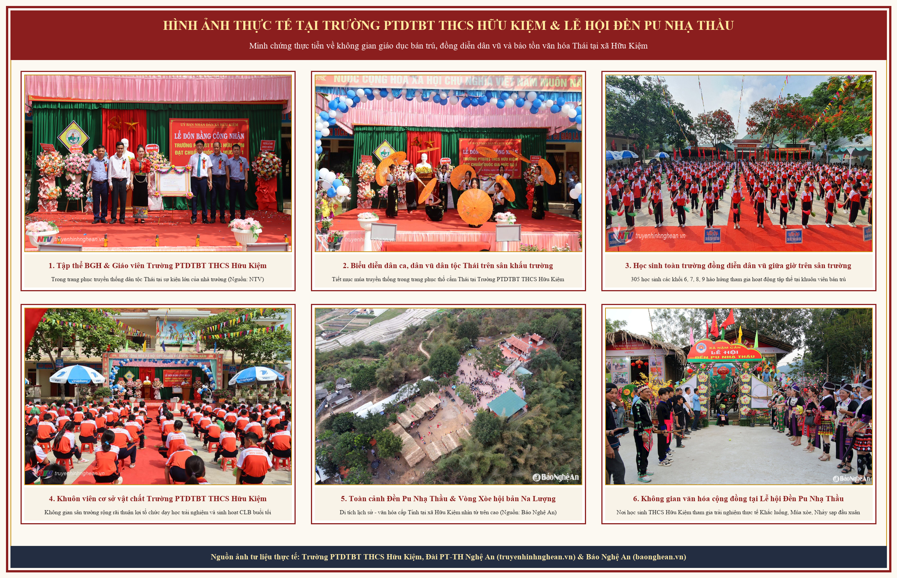

🎬 1. Video 3D Thuyết minh 5 Không gian Văn hóa Thái & Thực hành Âm nhạc (Full HD 1080p)
• Nội dung: Tái hiện trực quan cấu trúc thang 5 âm Ngũ cung Thái, âm sắc Khèn bè, tiết tấu gõ Khắc luống nhịp 2/4 (Tùng - Cắc - Cắc) tại Lễ hội Đền Pu Nhạ Thầu và đội hình 4 bước Xòe kết đoàn tại sân bán trú Trường PTDTBT THCS Hữu Kiệm.
📸 2. Hình ảnh Thực tế tại Trường PTDTBT THCS Hữu Kiệm & Lễ hội Đền Pu Nhạ Thầu (xã Hữu Kiệm)
